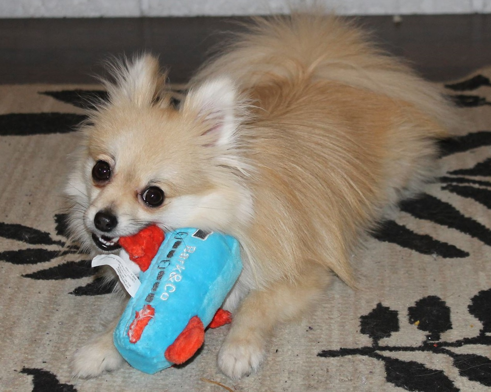
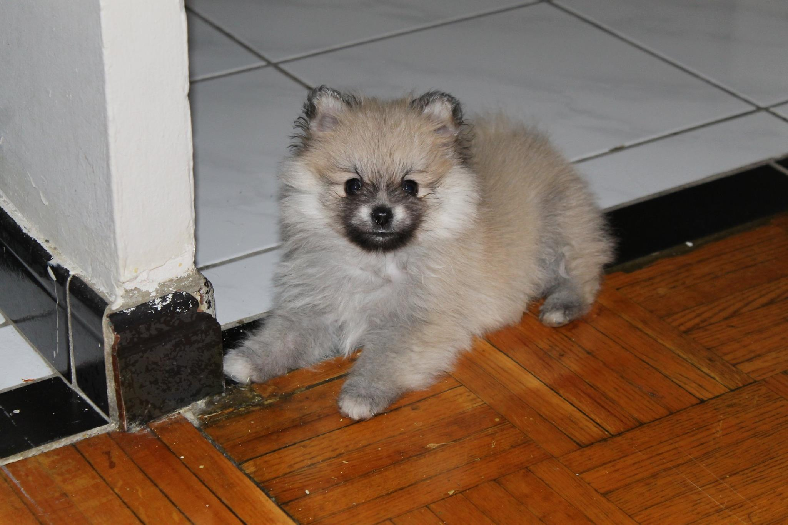
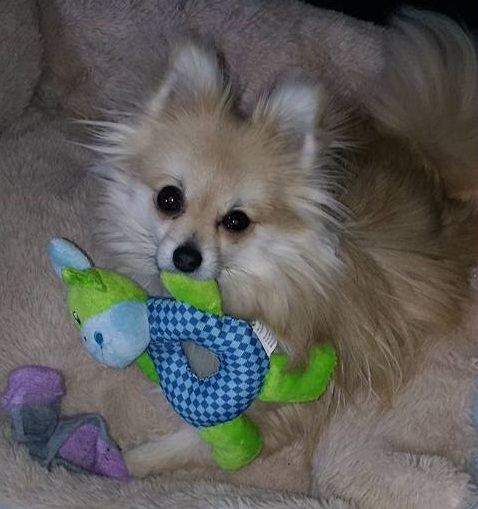

Meet Meeko
Everyone needs a friend in life. Even if that friend cannot speak the same language as you and do all of the things that you can do, there are so many other ways you can connect on a strong level. This is my friend, Meeko. Come on, he was just too important and too cute to not include here!

I first met this little fellow when he was 8 weeks old in December 2015. I was in college and living all by myself in a tiny apartment in Toronto. As I was new to the area, I didn't yet have any friends made. I've been through a lot of things with him and every time I looked up from my studies, there he was looking at me. He could fit in my pocket since he was so small. I admit I got scared sometimes due to his size, but he was always there licking my face to reassure me that everything was okay.

Today, he is a one year old, happy boy. He is small even for a Pomeranian breed, but I am reassured that he is perfectly healthy. He is also a registed ESA (Emotional Support Animal) as I have depression and anxiety, so that really helps me out! He loves to meet new people and will always try to lick your hand or face, whichever one is closest. With my family living so far from me, he is definitely a comfort and a major part of my life. He has been there helping me through very stressful times but also through the best times. I hope you have enjoyed meeting Meeko!